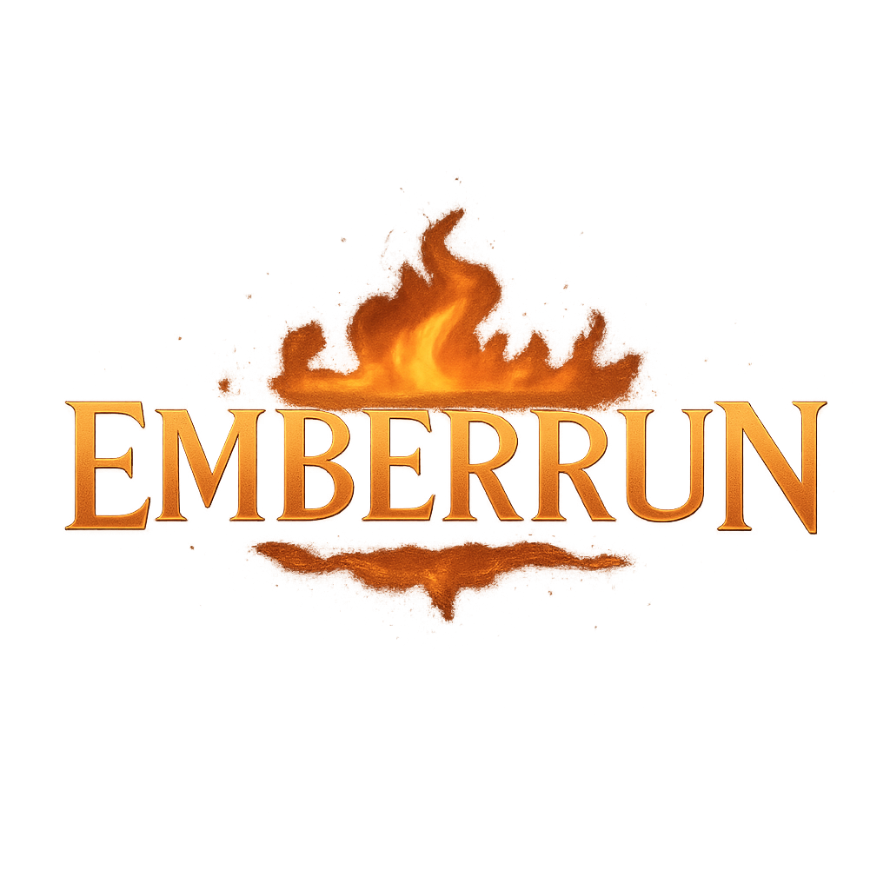
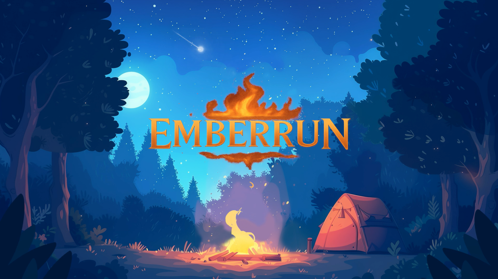
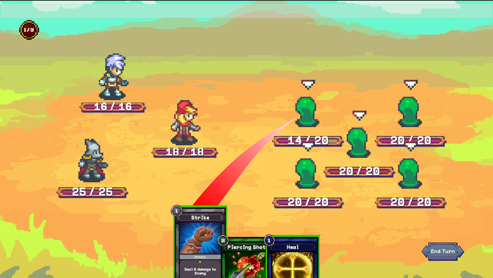

Emberrun
A roguelike card battler prototype focused on team composition, character synergies, and deckbuilding as the primary strategic layer.

Overview
Emberrun was my first Unity project and an early attempt at building a complex, systems-heavy roguelike card game. The core idea centered on party-based deckbuilding: each character contributed unique cards, and overall strategy emerged from team composition rather than individual card power.
While the project never progressed beyond a functional prototype, it played a crucial role in shaping how I think about scope, systems, and implementable design.
Design Goals
- Make team synergy the primary source of strategy.
- Give each character a distinct mechanical identity.
- Explore how deckbuilding emerges from party composition.
- Prototype a Slay-the-Spire–inspired structure in Unity.
Core Systems Explored
- Party-based deckbuilding (cards tied to characters)
- Action Point (AP) limited turn-based combat
- Status effects and inter-character synergies
- Relics and neutral cards to supplement party builds
Screenshots
Visuals from the Emberrun prototype showing the title screen and turn-based battle system.


What Worked
The conceptual foundation was strong. Designing characters and their associated cards reinforced how much depth can come from interlocking systems rather than content volume. The synergy system—where the presence of certain characters unlocked additional effects—became the most promising aspect of the design.
What Didn’t (and Why That Matters)
Emberrun was over-scoped for my experience level at the time. While I implemented a basic battle system and character selection, many systems remained conceptual rather than fully realized.
This project made two things very clear:
- I needed to design within tighter constraints.
- I needed deeper technical fluency before building large systems.
Key Lessons
- Ambitious ideas need proportional tooling and experience.
- Systems design must account for implementation reality.
- Smaller, focused prototypes lead to better iteration.
Why It’s Still in My Portfolio
Emberrun represents a pivotal learning moment. It directly influenced my shift toward smaller, systems-focused projects like Cult of Coin and Trailflip, where scope control and iteration became central.
Interested in My Process?
Happy to talk about systems design, prototyping, or iterative learning.
Contact Me